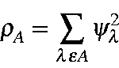

Next: TIDY Up: Keywords Previous: THERMO(nnn,mmm,lll)


Next: TIDY Up: Keywords Previous: THERMO(nnn,mmm,lll)
In TIDY the LMOs are tidied up: this involves deleting atoms that have very low intensity in an LMO, and removing the unused space that is generated as a result. The intensity, r, of an atom in a LMO is given by:

The criterion for 'very low intensity' has a default of 10-10, and can be reset by THRESH=n.nn. See also RELTHR.